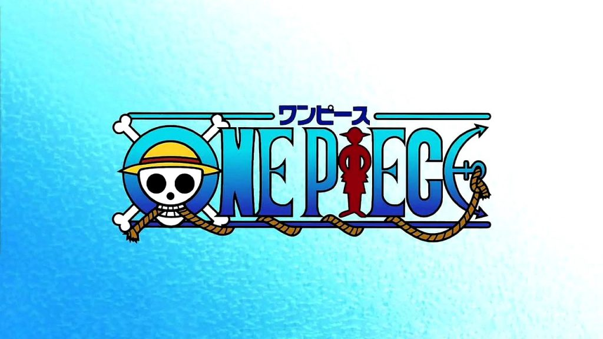
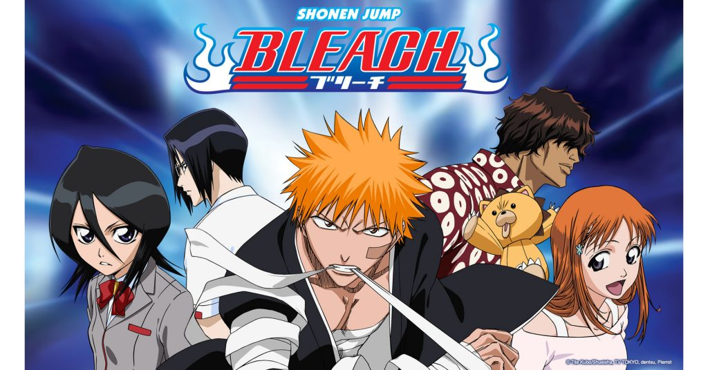

1. ONE PIECE
One Piece, so far the longest-running Shonen anime of all time. One Piece first started airing in October 1999 and is still ongoing. That is a staggering number of years, and even over this massive time period, it has not fallen too far in terms of popularity.
The story revolves around Luffy, a teen who dreams to become the King of Pirates by finding the treasure known as, you guessed it, One Piece. Luffy finds himself his merry band of misfits known as the Straw Hat Pirates and heads off to look for his treasure. The power system of this anime is dominated by mysterious fruits called Devil Fruits.
It is as simple as it could be, eating a Devil Fruit grants the user with magical powers. Some fruits grant the power to have the superhuman ability, like Luffy, who can stretch his body like rubber. Some provide the power to turn a part of one’s body into animals like the reindeer-like Tony Tony Chopper. And some give the ability to control a part of nature by transforming one’s body into a natural element in a certain way.
One Piece probably has the most unique animation style and character design from the other two in the Big Three. This is an anime that will last you ages with close to a thousand episodes which include fillers as well. Definitely not the one you can binge-watch in one go, in fact, it will probably take a lot of patience to start. But once you do, the show will take you places you didn’t know existed.
One Piece is the most financially successful out of the three. With its estimated income being close to $20 Billion. This would include about $528 Million for the anime and $8 Billion for the manga magazine alone. Merchandise, collected volumes and video games also add up to this already staggering figure to take it to the next level. It is also worthwhile to mention that Eiichiro Oda, the creator of One Piece, has a net worth of $200 million. This is well deserved because the creator has been working hard for years in a row now.
2. BLEACH
The second show in the prestigious Big Three is Bleach. Bleach has one of the most efficient fighting styles in all of anime. The characters use swords called Zanpakuto and duel to the death. But it’s not as simple as that. The story revolves around Ichigo Kurosaki, a teen who can interact with spirits.
His life flips around when he meets Rukia Kuchiki, a soul reaper who sends lost souls to Soul Society (Bleach’s iteration of Heaven.) Soul Reapers are beings who are no longer alive and exist as souls only. They also exterminate corrupt souls called Hollows and purify them. Rukia comes to Ichigo’s rescue as he and his family get attacked by a Hollow.
Injured, she staggers on her way to victory, and her only option is to transfer all her powers to Ichigo. Doing exactly that, she turns Ichigo into a soul reaper. He proceeds to exterminate the hollow and save his family, but it is not the end. A lot occurs, and Ichigo gets to keep the powers given to him by Rukia.
The show has some great arcs and storylines. The Bleach power system works on Spiritual Pressure, which comes to individuals naturally. The basic rule is that soul reapers with higher spiritual pressure will have a larger sword. Ichigo struggles to adapt to his powers initially but finds his way with guidance from a former soul reaper, Kisuke Urahara. This show is perfect for an exciting binge-watch as it has fast-paced action. It does not give a whole lot of time to philosophical debate like Naruto. Characters introspect and look at their inner choices, but when swords are drawn, the battle goes on with few words.
Bleach aired from October 2004 to March 2012. The Bleach anime made over $26 Million in its run of eight years. Apart from that, Bleach also saw massive sales for the Shonen Jump magazine and merchandise, with the former being $6 Billion and the latter over $260 Million. This brings Bleach’s total income to around $7 Billion. Tite Kubo, the creator of Bleach, has a net worth of $50 Million.
3. NARUTO

If you like fantasy shows with unique magical abilities combined with a world of Ninjas, this one is the perfect show for you. Naruto tells the story of an orphaned boy who is looked down on by society. Naruto grows up alone and with a few people for comfort. He doesn’t know anything about his parents.
He also doesn’t know that he has an evil fox spirit sealed inside of him. The Nine-Tailed Fox wreaked havoc in the Hidden Leaf Village ages ago. The 4th Hokage sealed this spirit inside Naruto to stop it from doing any more damage. As a result, the village was saved, but Naruto didn’t have any chance of having a normal childhood. This is an extremely popular show for its character strength and Naruto being the most Shonen protagonist ever. The power system of the Naruto world is called Chakra, it is what powers the Shinobi’s attacks and defenses.
Better known as Jutsu. The system is not very different from the Dragon Ball Z system of Ki. The greater the chakra, the stronger the shinobi. Naruto is a show that slowly opens up a world of mysteries and a very meticulously arranged plan by a villain who’s already dead.
Overall, if you’re looking to watch something that can make you cheerful but eventually sad. Something with the classic god-level anime fights as well as moments of deep thought. Naruto is the show for you. If you love villains with a reasonable theory and heroes who just won’t give up. This is exactly what you are looking for. Naruto was one of the most profitable animes of all time.
Masashi Kishimoto, the creator of Naruto, has a net worth of $20 Million. The anime itself earned TV Tokyo close to $45 Million between years 2015-2016. In 15 years of publication, the Naruto manga has sold over 220 million copies. Naruto also has countless games, music releases, events, movies, and now a spin-off. Club these up with the manga earnings of $6 Billion and anime sales of $147 Million, and you have the staggering figure of close to $10 Billion in revenue. It hardly needs to be said that Naruto is financially very profitable. In fact, it was the first anime to make so much money for TV Tokyo, taking the studio to new and greater heights.
Naruto aired from October 2002 to March 2017. Now it has a spinoff going on called Boruto: Naruto Next Generations. This show features Naruto’s son Boruto and, obviously, the new generation of Shinobi.